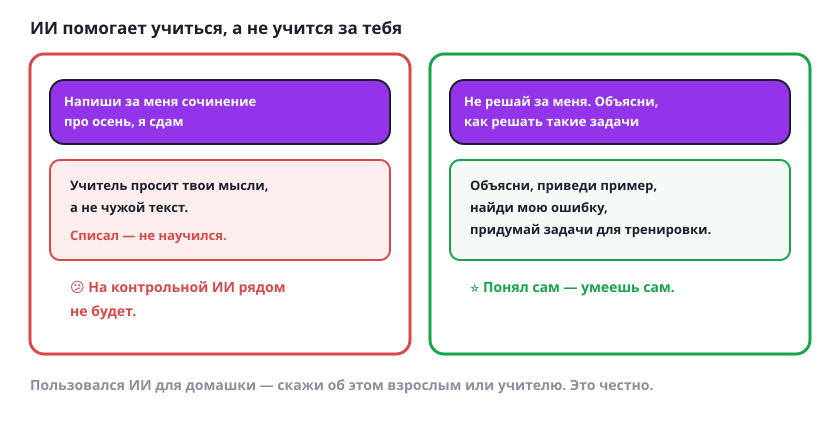

ИИ — помощник, а не тот, кто учится за тебя
ИИ может написать сочинение за минуту. Только учиться при этом будет он, а не ты.

Как пользоваться по-честному
- Проси объяснить, а не сделать. «Объясни, как решать такие задачи», «приведи пример», «найди ошибку в моём решении».
- Проси потренировать. «Придумай пять похожих задач» — и реши их сам. Это лучший способ разобраться.
- Не сдавай чужой текст как свой. Учитель просит твои мысли и твои слова, а не текст программы.
- Помни про контрольную. Там ИИ рядом не будет. Что понял сам — останется с тобой, что списал — исчезнет.
- Говори честно. Пользовался ИИ для домашней работы — скажи родителям или учителю. Многие учителя разрешают, если знают.
Попробуй сам: возьми задачу из учебника и попроси ИИ не решать её, а объяснить, как к ней подступиться. Дальше реши сам и сверь ответ.
ИИ — как тренер. Тренер может показать, как бросать мяч, но отжиматься за тебя не станет — иначе сильнее станет он.